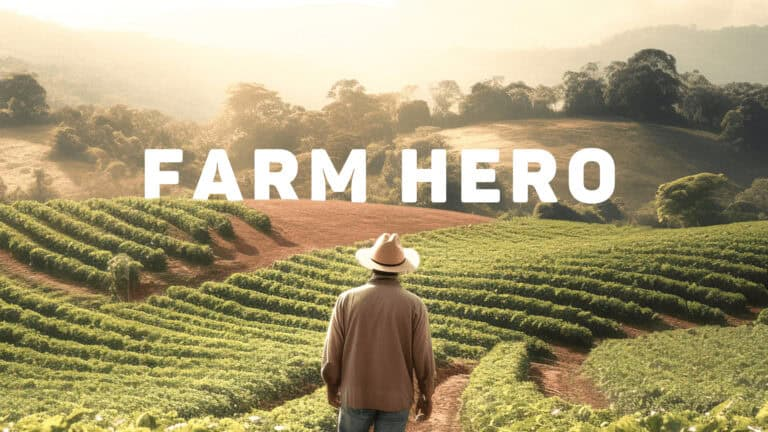
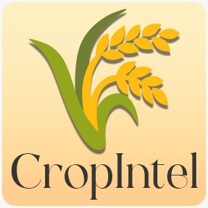
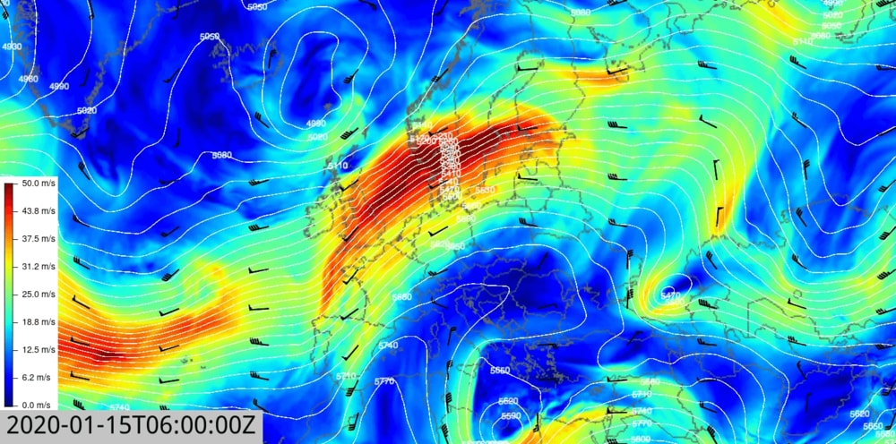
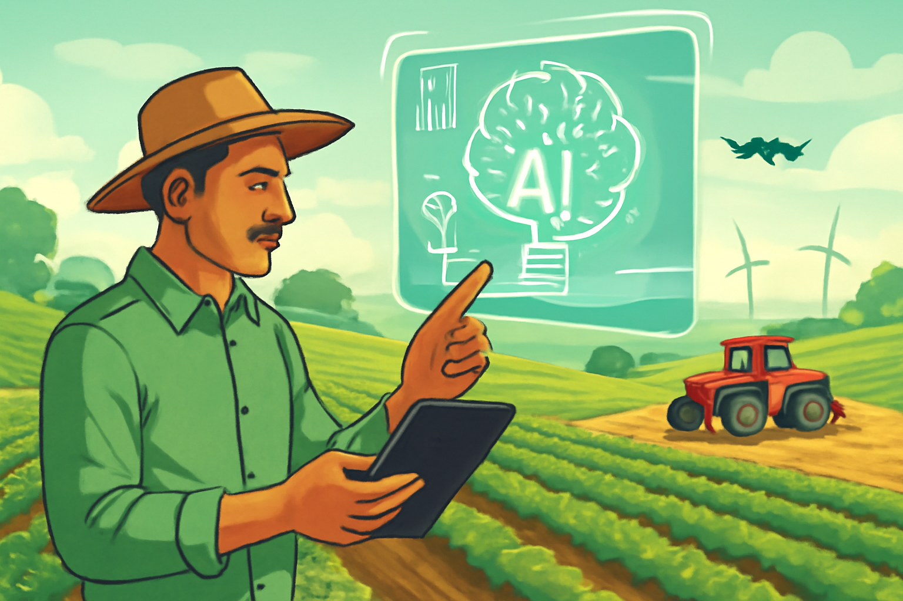
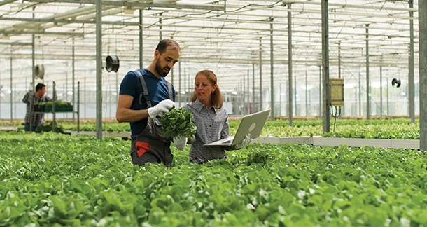

Empowering Informed Decisions
Built for Intelligent Farming.
Enter the Intelligence Layer

Built for Intelligent Farming.
Enter the Intelligence LayerIntelligence Modules

Module 01
Real-time atmospheric analysis and predictive weather modeling for precision agricultural timing.
Module 02
Live market data streams, commodity price prediction, and optimal sell-window identification.
Module 03
AI-driven crop management recommendations powered by verified agricultural advisories.


Each insight is generated using verified agricultural intelligence.
No hallucinations.
No assumptions.
Our Retrieval-Augmented Generation pipeline cross-references every recommendation against
validated agricultural databases, government advisories, and real-time field data —
delivering decisions you can trust with your livelihood.
The Pipeline
Agricultural advisories, weather feeds, soil reports, and market data are gathered from verified sources in real-time.
Your farm's specific conditions — soil type, crop stage, microclimate, and history — are mapped into the intelligence model.
RAG synthesizes verified data with your context, producing actionable intelligence — not generic advice.
You receive precise, sourced recommendations with confidence scores. Every insight is traceable back to its origin.